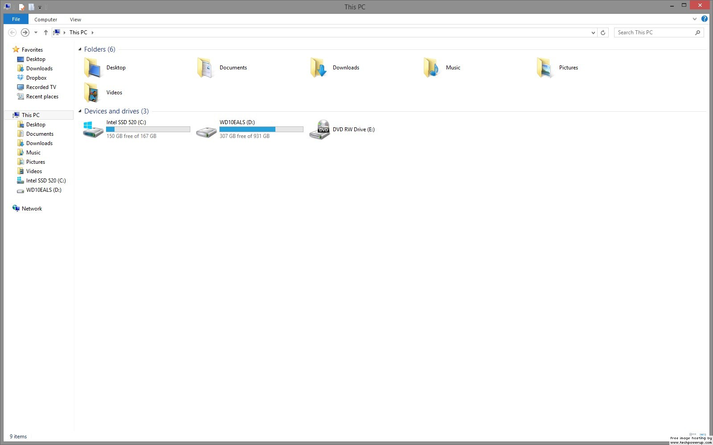

Windows 7/8 Style "My Computer"

Windows 8.1 "This PC"

I want the navigation bar to the left to have the separation and position that it had previously. A separate "Libraries" category with Docuemnts, Music, Pictures, and Videos, and "This PC" or "My Computer" with drives and drives only.
I feel this feature would be perfectly implemented into Classic Explorer, as it could make Classic Explorer a way to get the old format back, much like Classic Shell Start Menu is for so many others.